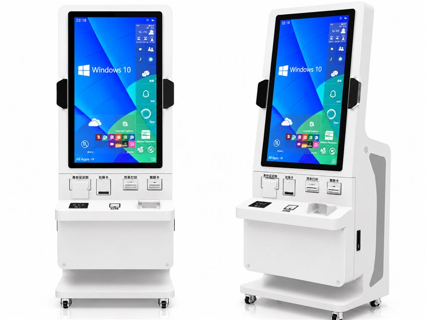

Government Services Kiosk with Document Readers
A Windows-based service counter built around document and card reading: ID documents, social-security cards, bank cards and printed receipts in one session.
Operating system support
One cabinet, three platform routes. The choice depends on your software, drivers and how much local maintenance you want to allow.
Windows
Windows builds fit legacy government service clients that require ActiveX controls or Windows driver stacks.
Android
Android builds suit modern self-service apps where the card readers expose a USB or serial API.
Linux
Linux builds suit hardened installations where local storage and services have to stay minimal.
Embedded modules
Modules listed below are the ones visible on this unit. Each is integrated inside the cabinet, powered and routed through the internal harness, and exposed to your application through the platform's drivers or SDK.
- ID document reader
- Social-security card reader
- Receipt printer
- Bank card reader
- Barcode scanner
- Caster base
Typical applications
Municipal service halls
Social-security and benefits counters
Public records and certificate requests
Configuration options
Options to discuss for your project. Final specifications, module compatibility and ratings are confirmed in writing before an order.
- ID document reader and social-security card reader selection
- Bank card reader and receipt printer layout
- Barcode scanner and handheld scanner pairing
- Floor-standing cabinet on fixed feet or caster base
- Windows, Android or Linux image with required regional software
Before you request a quote
Which government platform and card types must be supported?
Is the software client Windows-only or available as an API?
How is patient or citizen data handled after the session ends?
Request a quote
Send the application, the peripherals you need, your operating system choice and the estimated quantity. We reply with the closest build, the open questions and the next step.